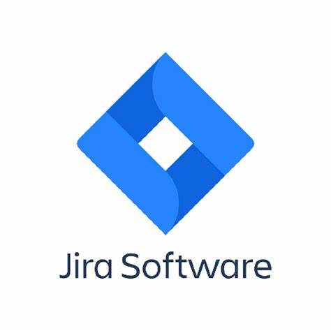
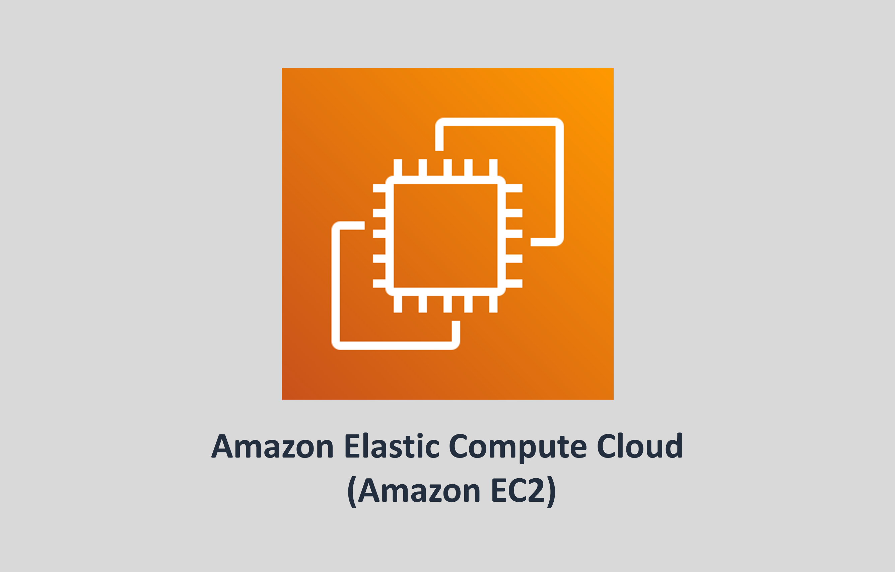
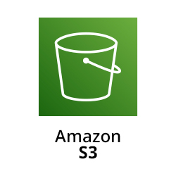
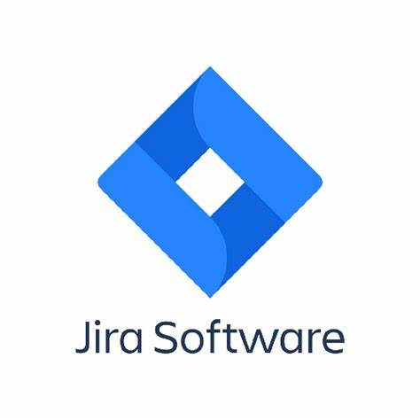
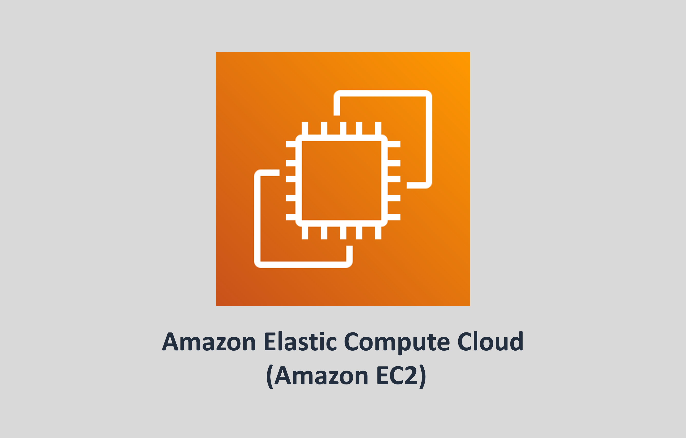
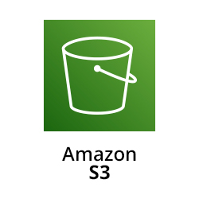
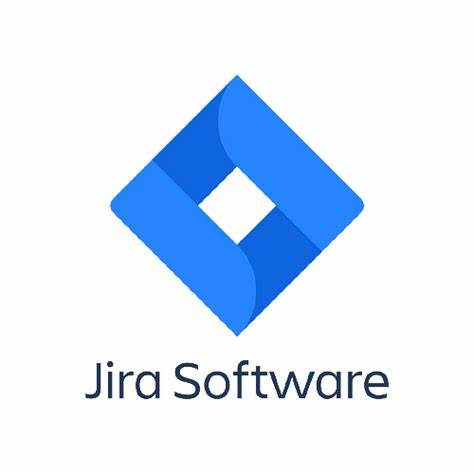
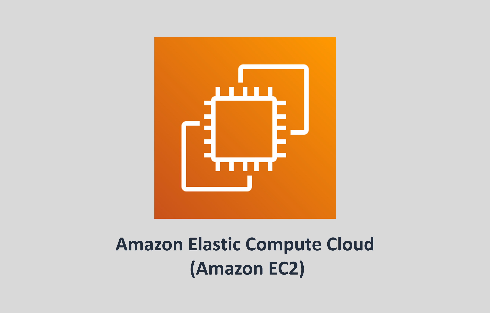
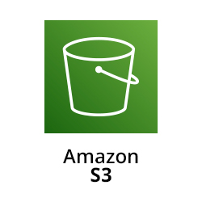

My Tech Stack
Things I've Experienced so far


 







I am a Software Engineer with 3+ years of experience specializing in Test Automation, DevOps, and Cloud technologies. Skilled in developing automated tests with Python, Selenium, Robot Framework, pytest, Allure, and Python Requests. Experienced in parallel test execution with pytest-xdist and pabot, and ensuring code quality with Robocop and Pylint. Proficient in DB testing with PostgreSQL and performance testing, including running distributed tests across multiple AWS EC2 machines using JMeter. Strong expertise in CI/CD pipelines using Jenkins, Git/GitHub Actions, and Docker. Advanced Certified in Visual AI Testing with Applitools, and skilled in mobile automation with Appium. Passionate about mentoring and building high-performing teams to drive continuous improvement in automation practices.
Archimeds Digital | Guindy Chennai, India | April 2022 - Present
Prist University | Jun 2018 - Jun 2021
Chennai, India
Madras University | Jun 2024 - Jun 2026
Chennai, India
Things I've Experienced so far



Things I've Worked so far
It is a leadership tool to oversee product activities, track investments, and evaluate outcomes across business units. It is used by management professionals like project managers and IT directors.
It is a Project management tool to maintain project activities for business. It is also used to track the task progress and to create Jira issue types through this application. This tool integrates with EAT applications.
A platform that supports critical testing tools like Tricentis NeoLoad for performance testing and BrowserStack for mobile testing, helping QA leads, administrators, and IT managers ensure software quality.
info.harish.p@gmail.com